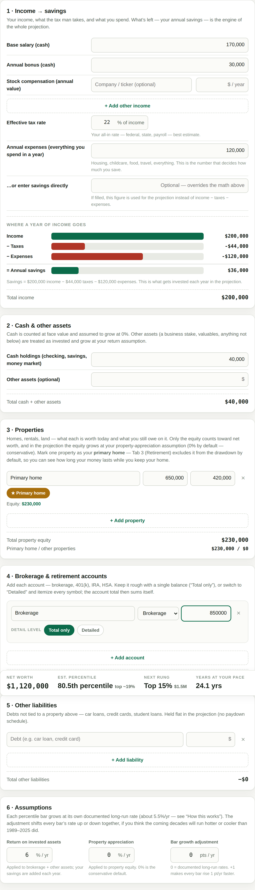
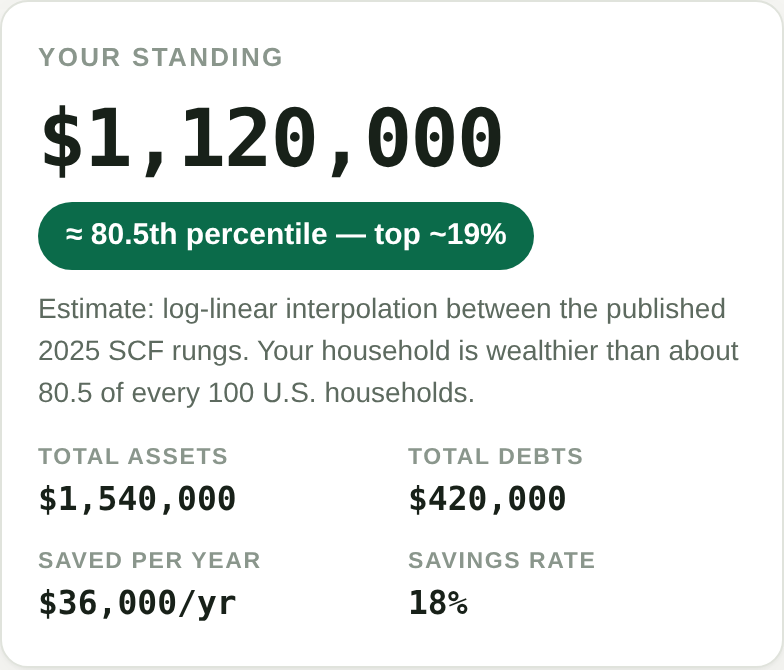
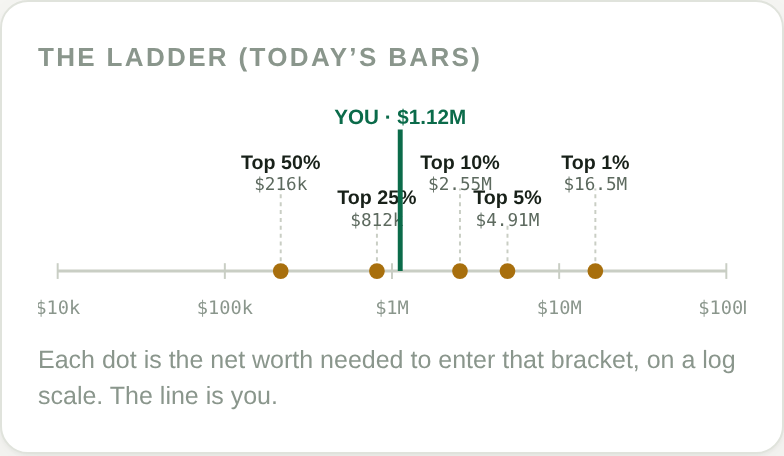
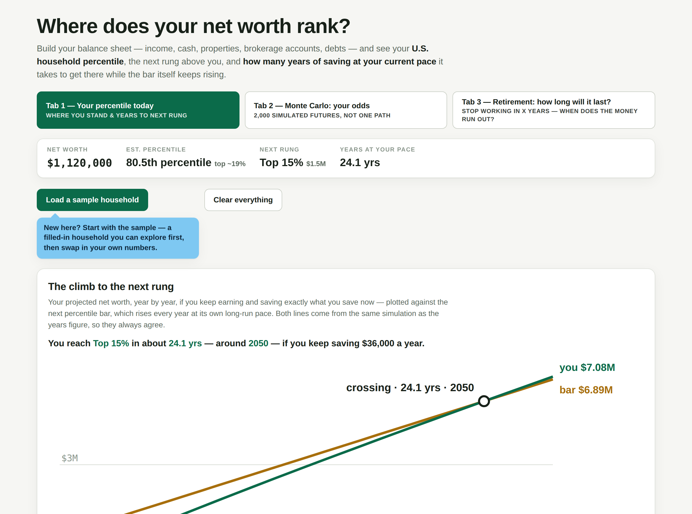
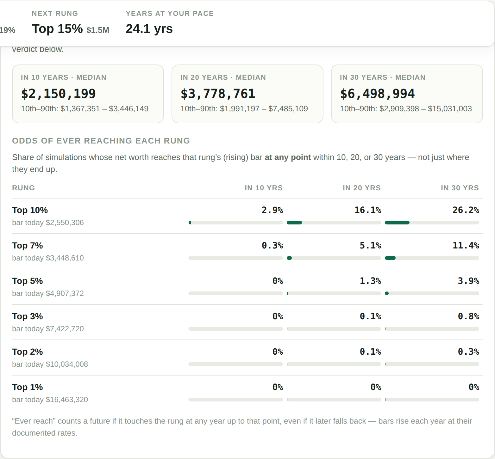
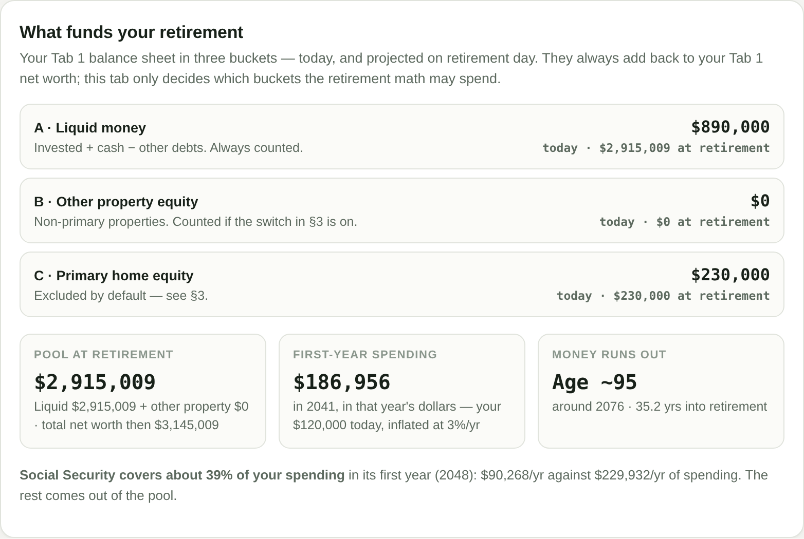
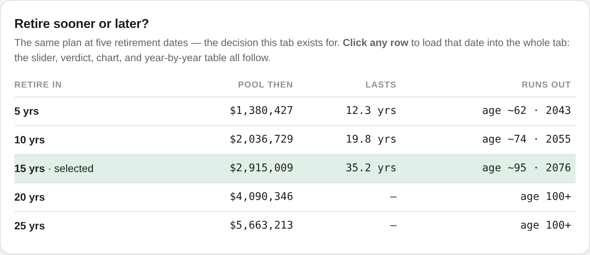

A few days ago I published what 36 years of Federal Reserve data say about the net worth ladder — how the bar for the top 10%, top 5%, and top 1% has risen at almost exactly the same speed for three and a half decades.
The most common reaction wasn't about the data. It was a question: "OK — so where do I stand? And what would it take to climb?"
So I built a calculator that answers it. It's free, it runs entirely in your browser (your numbers never leave your device — there's no server and no account), and it does three things:
Here's how to use each tab — and the handful of insights that surprised me while building it.
The ladder is not standing still. From 1989 to 2025, the bar for the top 10% grew at 5.52% a year; the top 5% and top 1% bars grew at 5.59% a year (Federal Reserve Survey of Consumer Finances, via DQYDJ). Inflation-adjusted, that's roughly 2.8% a year.
Which means: if your net worth grows slower than about 5.5% a year, you are sliding down the ladder even while your balance goes up. You can get richer every year and still fall behind in rank — because rank is relative, and everyone else's bar is compounding too.
Hold onto that. Every tab below is really about the race between your growth and the bar's growth.

Tab 1 — the input sections, filled in for the example household, including the "where a year of income goes" breakdown
Work down the six short sections:
There's no calculate button — it updates as you type. You get Your standing: your net worth, your percentile (interpolated smoothly between the Fed's published rungs, not rounded to the nearest one), what your net worth is made of, and the next rung — the milestone above you, the dollar bar for it, and what it would take: how many years to reach it at your current savings and returns, while the bar itself keeps rising.

Your standing — $1,120,000, about the 80.5th percentile
Our example household — $200,000 of income ($170k salary + $30k bonus), a 22% effective tax rate, $120,000 of spending, $40,000 of cash, a $650,000 home with $420,000 still owed, and $850,000 in a brokerage account — lands at $1,120,000 of net worth, about the 80.5th percentile. They save $36,000 a year, an 18% savings rate. Their next rung is the Top 15% (the 85th percentile, a $1.5 million bar today) — and at their current pace, with the bar rising as they climb, the tool says it takes 24.1 years to get there.

The ladder on a log scale — each dot is the bar for that bracket, and the line is you

The climb — your projected line against the rising Top 15% bar, crossing around 2050
Percentile points get more expensive as you climb. Here are the actual 2025 bars:
The ladder isn't a staircase with equal steps. It's closer to exponential: each rung costs several times the last. That's why "moving up five percentiles" means something completely different at the median than it does at the top.
Early on, saving moves you. Later, returns do. When your portfolio is small, your annual savings dwarf your investment gains, so your savings rate is the engine. There's a crossover point — when a normal year's market gain on your portfolio exceeds everything you save that year — after which the portfolio does the heavy lifting and time in matters more than amount in. Tab 1's "what it would take" quietly shows you which side of that crossover you're on: if cutting the wait means saving more, you're before it. If it means earning more on what you have, you're after it.
Tab 1 assumes your return is the same every year. Real markets aren't like that, and the difference matters — so Tab 2 replays your plan through thousands of different market histories.
Two settings: volatility (15% a year by default — roughly what a stock-heavy portfolio actually does; drag it from 5% to 30% to see how much it matters) and number of simulations (500 for a fast preview, 2,000 standard, 5,000 for the smoothest picture).
You get three things:

Monte Carlo results — median outcomes at 10, 20, and 30 years, and the odds of ever reaching each rung
For our example household, the median simulated path reaches $2.15 million in 10 years, $3.78 million in 20, and $6.50 million in 30 — with a wide spread around it (at 30 years, the middle 80% of paths land between $2.9 million and $15.0 million). Their odds of ever touching the Top 10% bar: 2.9% within 10 years, 16.1% within 20, 26.2% within 30. The Top 5% bar? 3.9% within 30 years. The Top 1%? Effectively zero — the ladder's top rungs are simply too far and rising too fast for salary-and-savings alone, which is itself a finding (more on that below).
And here's the quiet punchline of the whole tool: the median path multiplies this household's money 5.8 times over 30 years — and gains only about two percentile points (from the 80.5th to roughly the 82nd), because over the same 30 years the bars themselves roughly quintuple. Getting much richer and barely climbing are not opposites. At the same speed, they're the same outcome.
The average plan is a lie; the median path is the honest one. With volatility, the median outcome sits below the smooth Tab 1 projection at the same average return. That's volatility drag: a 30% loss needs a 43% gain to undo, so jagged returns compound worse than smooth ones. Raise the volatility slider and watch the median sag even though the "average return" never changed.
"Ever reaching" a rung is much easier than staying there — or ending there. Plenty of paths touch a high bar in a hot year and fall back. The odds table is deliberately about touching, and the 30-year distribution is about ending. Plan your life on the ending column, and treat the touching column as encouragement, not a promise.
This is the tab I actually built the calculator for. Tabs 1 and 2 are about rank. Tab 3 is about freedom.
Start at the top with your current age — it isn't decoration; it decides when Social Security can start, and everything keys off it. Then:
The output is a verdict (how long the money lasts — or that it outlasts the table), a breakdown of what funds your retirement, and a year-by-year table. Read the "Income in" column carefully: it shows Social Security and other income once they've actually started. Before that, it shows $0 — those are your bridge years, funded entirely from your savings.

What funds your retirement — the three buckets, the pool at retirement, and the verdict
Our example household is 45 and testing retirement in 15 years, at 60, still spending $120,000 a year in today's dollars. By retirement day their liquid pool — brokerage and cash, home excluded — has grown to $2,915,009. First-year spending, inflated at 3% for 15 years, is $186,956. The verdict: the money lasts 35.2 years, running out around age 95. Social Security (estimated at about $4,369 a month, claimed at 67) doesn't start until 2048 — seven bridge years after they stop work — and in its first year it covers only about 39% of their spending. The other 61% comes out of the pool. Every year. That's what "retirement income" mostly is, for people who retire before their late 60s: your own savings, handed back to you slowly.
Then play with Retire sooner or later? — click the 5, 10, 15, 20, or 25-year rows and the whole tab rebuilds around that choice:

Retire sooner or later — the same plan at five different retirement dates
Read that table slowly, because it's the most honest five lines in personal finance. Retire in 5 years and they're out of money at about 62. In 10 years, they last to about 74. In 15, to about 95. In 20 or 25, the money outlasts the table entirely. Five extra years of work bought 7.5 more years of security, then 15.4 more, then effectively a lifetime. Same household, same spending, same returns — the date is the decision.
Percentile is not readiness. You can sit at the 95th percentile and not be able to retire — if you spend like it. You can sit at the 60th and be completely free — if you don't. Tab 1 answers "where do I rank?" Tab 3 answers "can I stop?" They are different questions, and only one of them sets you free. Chasing a rung is a fine motivator. It is a terrible retirement plan.
The bridge years are the real price of retiring early. Retire at 50 and claim Social Security at 67, and you have 17 years where the "Income in" column reads $0. Nothing about that is fatal — but it has to be funded, on purpose, in advance. The table turns a vague worry ("can I afford the gap?") into a specific number of years times a specific spending level.
Delaying retirement is triple-powered. Every extra year of work (a) adds a year of saving, (b) adds a year of compounding, and (c) removes a year of spending from the pile — and usually (d) increases your Social Security benefit. No other single lever pulls in four directions at once. The sooner-or-later table is the fastest way I've found to feel that: move the retirement date five years and watch a decade of security appear or disappear.
Spending is the lever that works twice. A dollar less of annual spending means a dollar more saved every working year — and a dollar less your savings have to cover every retired year. It compounds on both sides of the retirement line. Tab 3 makes this visceral: lower the spending box by a little and watch the money last years longer.
Your house is not a plan — unless you decide it is. Most net worth statements quietly count the home, which flatters the "how long would it last" answer with money you'd have to move out to spend. Excluding it by default isn't pessimism; it's honesty. If selling or downsizing is genuinely on your table, flip the switch and see both versions of your future. Just choose it on purpose.
The calculator is free and open source, and — I'll repeat this because it matters — everything runs in your browser. No account, no server, your numbers never leave your device.
👉 zanyaziz.github.io/retirement-calculator
My suggested route: start with the built-in sample to see how it feels, then clear it and enter your own rough numbers — estimates are fine, this is a compass, not an audit. Find your percentile in Tab 1. Check your odds in Tab 2. Then sit with Tab 3 and move the retirement slider until the money lasts as long as you need it to. The distance between where that slider starts and where it needs to be is your path to retirement — measured in years of saving, not in anyone else's percentile.
The ladder will keep moving at its 5.5% a year whether you watch it or not. The point was never really the rank. It's knowing — in years, not vibes — how far you are from being able to stop.
Data: Federal Reserve Survey of Consumer Finances 2025 thresholds (via DQYDJ); rung growth rates from SCF thresholds 1989–2025. The calculator is an educational tool, not financial advice — it uses simplified assumptions (steady returns in Tab 1, simulated markets in Tab 2, and the drawdown rules described above in Tab 3), and your actual mileage will vary.